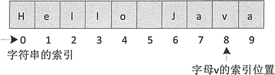

Java字符串查找（3种方法）
在给定的字符串中查找字符或字符串是比较常见的操作。字符串查找分为两种形式：一种是在字符串中获取匹配字符（串）的索引值，另一种是在字符串中获取指定索引位置的字符。
其中，str 表示指定字符串；value 表示待查找的字符（串）；fromIndex 表示查找时的起始索引，如果不指定 fromIndex，则默认从指定字符串中的开始位置（即 fromIndex 默认为 0）开始查找。
例如，下列代码在字符串“Hello Java”中查找字母 v 的索引位置。
上述代码执行后 size 的结果为 8，它的查找过程如图 1 所示。
注意：lastIndexOf() 方法的查找策略是从右往左查找，如果不指定起始索引，则默认从字符串的末尾开始查找。
charAt() 方法的使用示例如下：
根据字符查找
String 类的 indexOf() 方法和 lastlndexOf() 方法用于在字符串中获取匹配字符（串）的索引值。1. indexOf() 方法
indexOf() 方法用于返回字符（串）在指定字符串中首次出现的索引位置，如果能找到，则返回索引值，否则返回 -1。该方法主要有两种重载形式：str.indexOf(value) str.indexOf(value,int fromIndex)
其中，str 表示指定字符串；value 表示待查找的字符（串）；fromIndex 表示查找时的起始索引，如果不指定 fromIndex，则默认从指定字符串中的开始位置（即 fromIndex 默认为 0）开始查找。
例如，下列代码在字符串“Hello Java”中查找字母 v 的索引位置。
String s = "Hello Java";
int size = s.indexOf('v'); // size的结果为8
上述代码执行后 size 的结果为 8，它的查找过程如图 1 所示。

图1 indexOf() 方法查找字符过程
图1 indexOf() 方法查找字符过程
例 1
编写一个简单的 Java 程序，演示 indexOf() 方法查找字符串的用法，并输出结果。代码如下：
public static void main(String[] args) {
String words = "today,monday,sunday";
System.out.println("原始字符串是'"+words+"'");
System.out.println("indexOf(\"day\")结果："+words.indexOf("day"));
System.out.println("indexOf(\"day\",5)结果："+words.indexOf("day",5));
System.out.println("indexOf(\"o\")结果："+words.indexOf("o"));
System.out.println("indexOf(\"o\",6)结果："+words.indexOf("o",6));
}
运行后的输出结果如下：
原始字符串是'today,monday,sunday'
indexOf("day")结果：2
indexOf("day",5)结果：9
indexOf("o")结果：1
indexOf("o",6)结果：7
2. lastlndexOf() 方法
lastIndexOf() 方法用于返回字符（串）在指定字符串中最后一次出现的索引位置，如果能找到则返回索引值，否则返回 -1。该方法也有两种重载形式：str.lastIndexOf(value) str.lastlndexOf(value, int fromIndex)
注意：lastIndexOf() 方法的查找策略是从右往左查找，如果不指定起始索引，则默认从字符串的末尾开始查找。
例 2
编写一个简单的 Java 程序，演示 lastIndexOf() 方法查找字符串的用法，并输出结果。代码如下：
public static void main(String[] args) {
String words="today,monday,Sunday";
System.out.println("原始字符串是'"+words+"'");
System.out.println("lastIndexOf(\"day\")结果："+words.lastIndexOf("day"));
System.out.println("lastIndexOf(\"day\",5)结果："+words.lastIndexOf("day",5));
System.out.println("lastIndexOf(\"o\")结果："+words.lastIndexOf("o"));
System.out.println("lastlndexOf(\"o\",6)结果："+words.lastIndexOf("o",6));
}
运行后的输出结果如下：
原始字符串是'today,monday,Sunday'
lastIndexOf("day")结果：16
lastIndexOf("day",5)结果：2
lastIndexOf("o")结果：7
lastlndexOf("o",6)结果：1
根据索引查找
String 类的 charAt() 方法可以在字符串内根据指定的索引查找字符，该方法的语法形式如下：字符串名.charAt(索引值)提示：字符串本质上是字符数组，因此它也有索引，索引从零开始。
charAt() 方法的使用示例如下：
String words = "today,monday,sunday"; System.out.println(words.charAt(0)); // 结果：t System.out.println(words.charAt(1)); // 结果：o System.out.println(words.charAt(8)); // 结果：n
关注公众号「站长严长生」，在手机上阅读所有教程，随时随地都能学习。内含一款搜索神器，免费下载全网书籍和视频。

微信扫码关注公众号